Dit document beschrijft het Informatiemodel Omgevingswet (IMOW) dat gebruikt wordt in de keten van plan tot publicatie voor het toekennen van machine-leesbare informatie aan regelingen. Het IMOW is gebaseerd op het conceptuele model CIM-OW. CIM-OW hoort bij de reeks conceptuele modellen waarop de ketens van het Digitaal Stelsel Omgevingswet (DSO) gebaseerd zijn. Het IMOW specificeert hoe de concepten van het CIM-OW geïmplementeerd moeten worden. Het IMOW legt vast welke objecten aan het DSO kunnen worden aangelevred..
In paragraaf 1.1 wordt een context geboden van de standaard. Vervolgens wordt in paragraaf 1.2 een context geboden van de aanwezige documentatie en waar je wat kunt vinden. In paragraaf 1.3 wordt de verdere inhoud van dit document toegelicht.
Context standaard
Wanneer je in de context van de Omgevingswet als bevoegd gezag besluit over het wijzigen van een regeling (bijvoorbeeld een Omgevingsplan) en dat besluit officieel wilt publiceren doe je dit door een zip bestand, met de inhoud van het besluit, aan te leveren naar de LVBB, de landelijke voorziening bekendmaken en beschikbaar stellen. Hoe dat bestand gestructureerd moet zijn is vastgelegd in verschillende standaarden:
De LVBB bronhouderkoppelvlak standaard schrijft voor welke bestanden er in de aanlevering moeten zitten wat voor eisen er zijn aan de namen van de bestanden etc.
De STOP standaard legt de documentstructuur van de tekst van het besluit vast. Ook beschrijft deze standaard veel metadata voor de verwerking van het besluit. Er is onderscheid tussen documenten met een artikelstructuur en vrije-tekst documenten. Verder beschrijft de STOP standaard hoe geografische informatieobjecten (GIO’s) moeten worden aangeleverd. Deze informatie vormt gezamenlijk de inhoud van de regeling.
Het IMOW (dit document) beschrijft hoe de tekstonderdelen van een besluit te annoteren zijn, zodat ze beter verwerkt (en op een kaart getoond) kunnen worden in het DSO. Een annotatie bestaat uit een IMOW object dat gekoppeld is aan identificeerbare onderdelen van de tekst. Het IMOW is bedoeld voor het realiseren van functionaliteit ten behoeve van het bevragen van een regeling in DSO-verband. Data zijn hiervoor bezien van uit geografisch perspectief. Bij een IMOW-aanlevering kun je denken aan het duiden van specifieke activiteiten op de kaart of het meeleveren van functies of beperkingengebieden. In principe zorgen de gegevens die aangeleverd worden vanuit het IMOW dat de buitenwereld in staat is om de Omgevingswet-informatie op een kaart terug te vinden
Toepassingsprofielen omgevingsdocumenten (TPOD’s). Per type omgevingsdocument is er ook een set aanvullende regels specifiek voor dat type omgevingsdocument. In de TPOD’s is opgenomen hoe die toegepast moeten worden.
Schematisch overzicht van aanlevering conform de standaard
Documentatie
In deze paragraaf worden de verschillende documenten behorend bij de DSO standaarden kort toegelicht zodat het duidelijk is waar welke informatie te vinden is.
IMOW – plan tot publicatie (dit document)
Dit document beschrijfthoe annotaties bij een besluit aangeleverd dienen te worden en hoe je aanlevert conform de set van IMOW.xsd’s. Deze XSD’s (XML-schema’s) worden gebruikt voor de beschrijving van XML-gebaseerde gegevensuitwisseling in het DSO. Het IMOW implementeert de objecten beschreven in het CIM-OW.
CIM-OW – plan tot publicatie
Het conceptueel informatiemodel, hierin staat beschreven welke objecttypen het CIM-OW kent en hoe deze zich tot elkaar verhouden. Het CIM-OW is het leidende informatiemodel voor informatie-uitwisseling binnen het DSO.
STOP
De Standaard Officiële Publicaties beschrijft hoe je een omgevingsdocument moet structureren.
TPOD
Toepassingsprofielen voor omgevingsdocumenten (TPOD’s) beschrijven de juridische en informatiekundige context voor de specifieke omgevingsdocumenten. Zie de publicatie van de standaard voor de actuele lijst toepassingsprofielen:
Omgevingsplan (het omgevingsdocument dat gemeenten aanleveren, het voormalige bestemmingsplan)
Omgevingsverordening (het omgevingsdocument dat provincies aanleveren, de voormalige provinciale verordening)
Waterschapsverordening (het omgevingsdocument dat waterschappen aanleveren)
Algemene maatregelen van bestuur/ ministeriële regeling (AMvB/MR, de omgevingsdocumenten die worden aangeleverd vanuit het rijk)
Projectbesluit (het omgevingsdocument waarmee een specifiek project mogelijk wordt gemaakt)
Omgevingsvisie (het omgevingsdocument waarmee het bevoegd gezag een visie kan maken)
De validatiematrix
Dit document beschrijft validatieregels waaraan aanleveringen dienen te voldoen. Dit document is zelf geen standaard maar is een opsomming van regels die in de standaarden beschreven staan en waar tegen gevalideerd kan worden
Voorbeeldbestanden (Implementatiebestanden)
Dit zijn voorbeelden van correcte aanleveringen. Deze geven inzicht hoe IMOP en IMOW technisch toegepast moeten worden om een nieuw omgevingsdocument aan te leveren.
Waardelijsten
Dit document geeft aan welke waarden er gekozen kunnen worden bij aan de waardelijsten gekoppelde attributen van IMOW. Waardelijsten worden in de Stelselcatalogus (https://stelselcatalogus.omgevingswet.overheid.nl/waardelijsten) gepubliceerd en maken dus geen onderdeel uit van de XML-schema’s.
Leeswijzer
Hoofdstuk 2 beschrijft het informatiemodel en zijn onderdelen. Verder wordt het informatiemodel in de context geplaatst van de standaard voor officiële publicaties.
Hoofdstuk 3 bespreekt de technische implementatie en geeft hierbij aan welke bestanden er verwacht worden en beschrijft de randvoorwaarden voor het aanleveren.
Hoofdstuk 4 gaat gedetailleerd in op hoe de OW-bestanden er uit dienen te zien en geeft een XML-beschrijving van ieder bestand dat aangeleverd kan worden.
Hoofdstuk 5 geeft weer waar het CIM-OW en IMOW afwijken. Hoofdstuk 6 beschrijft enkele aspecten uit STOP die relevant zijn voor de werking van OW en geeft richtlijnen over de wijze waarop OW zich verhoudt tot STOP. Hoofdstuk 7 beschrijft het muteren van OW-objecten.
Informatiemodel Omgevingswet
Dit hoofdstuk beschrijft het Informatiemodel Omgevingswet (IMOW). Paragraaf 2.1 beschrijft de context van het IMOW, vervolgens wordt er in paragraaf 2.2 vastgelegd hoe het IMOW eruitziet bij vrijetekststructuur en in paragraaf 2.3 wordt de artikelsgewijze structuur beschreven. In paragraaf 2.4 wordt een aantal belangrijke diagrammen uitgelicht. In paragraaf 2.5 tenslotte wordt de verhouding tussen OP en OW beschreven.
Context IMOW
De IMOW standaard schrijft voor hoe je de tekst van een regeling (zoals beschreven in de STOP standaard) annoteert met OW-objecten. Dit gebeurt door OW-objecten mee te sturen in een levering en deze aan tekstonderdelen van OP te koppelen via de identificatie van die tekstonderdelen, het wId. OW-objecten zelf kunnen weer gekoppeld zijn aan andere OW-objecten waardoor er naast de tekst ook een gestructureerde collectie objecten bij een regeling ontstaat. Deze structuur kan bijvoorbeeld gebruikt worden om de inhoud van de regeling via een kaart te ontsluiten.
De STOP standaard beschrijft twee soorten tekststructuren voor omgevingsdocument: de artikelsgewijze structuur en de vrijetekststructuur. Afhankelijk van de documentstructuur (welke je kunt gebruiken is vastgelegd in de TPOD documenten) worden verschillende objecten meegeleverd. Voor beide typen tekststructuren is een diagram toegevoegd met hierin de aanwezige objecttypen, attributen en relaties.
De UML-diagrammen worden gebruikt om de IMOW-schema’s mee te genereren. Deze koppeling zorgt voor directe link tussen wat je in de diagrammen ziet en de wijze waarop OW-bestanden gestructureerd moeten worden. In deze diagrammen wordt de volgende legenda gebruikt:
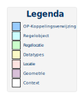Legenda gebruikt bij UML-diagrammen
OP-koppelingsverwijzingen zijn OW-objecten die een 1 op 1 tegenhanger hebben in STOP.
Een Regelobject verwijst naar een regel. Regellocatie objecten koppelen Locaties aan regels. Datatypes groeperen bij elkaar horende gegevens. Locatie objecten zijn concrete locaties. Geometrie geeft een geometrie in coördinaten. Context objecten maken geen deel uit van het IMOW maar plaatsen de objecten van het IMOW in een bredere context.
Vrijetekststructuur
Figuur 3 bevat het UML-diagram voor de vrijetekststructuur.
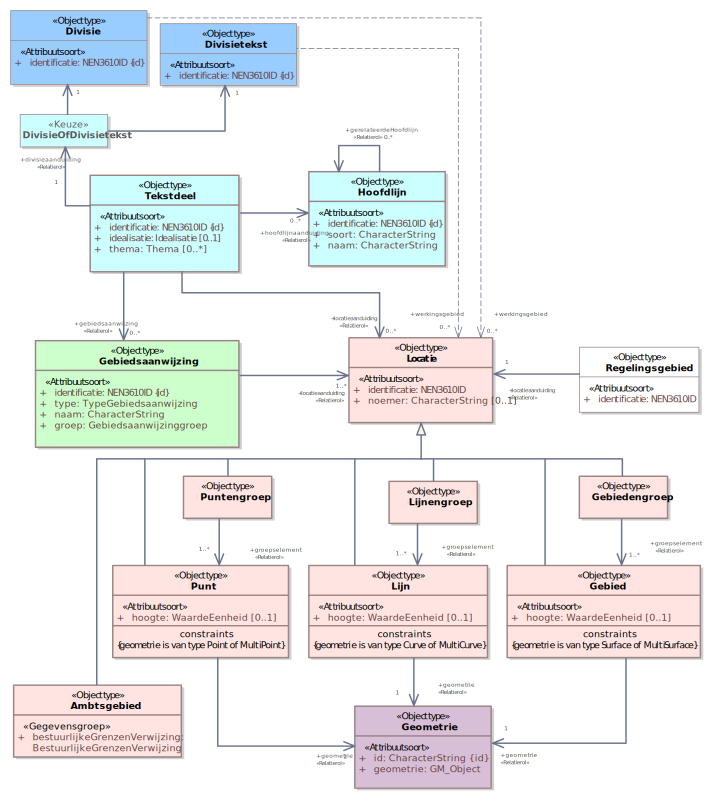UML-diagram vrijetekststructuur
Binnen de vrijetekststructuur is een Divisie een OP-object. Dit betekent dat de inhoudelijke tekstgegevens worden aangeleverd in het IMOP-gedeelte en dat je vanuit OW verwijst naar deze Divisie. Vanuit OW kun je een of meerdere tekstdelen aangeven bij de Divisie. Een tekstdeel kan optioneel nog één of meerdere hoofdlijnen, gebiedsaanwijzingen, en/of locaties bevatten. Tevens kan er een locatie direct gekoppeld zijn aan het tekstdeel of kan de locatie via de gebiedsaanwijzing gekoppeld zijn aan het tekstdeel. De locatie is een supertype van ofwel een lijn, punt, gebied of een groep van lijnen, punten of gebieden. Uiteindelijk heeft ieder subtype van locatie een geometrie die als los GML-bestand wordt meegeleverd.
Artikelstructuur
Figuur 4 toont het UML-diagram voor artikelsgewijze structuur.
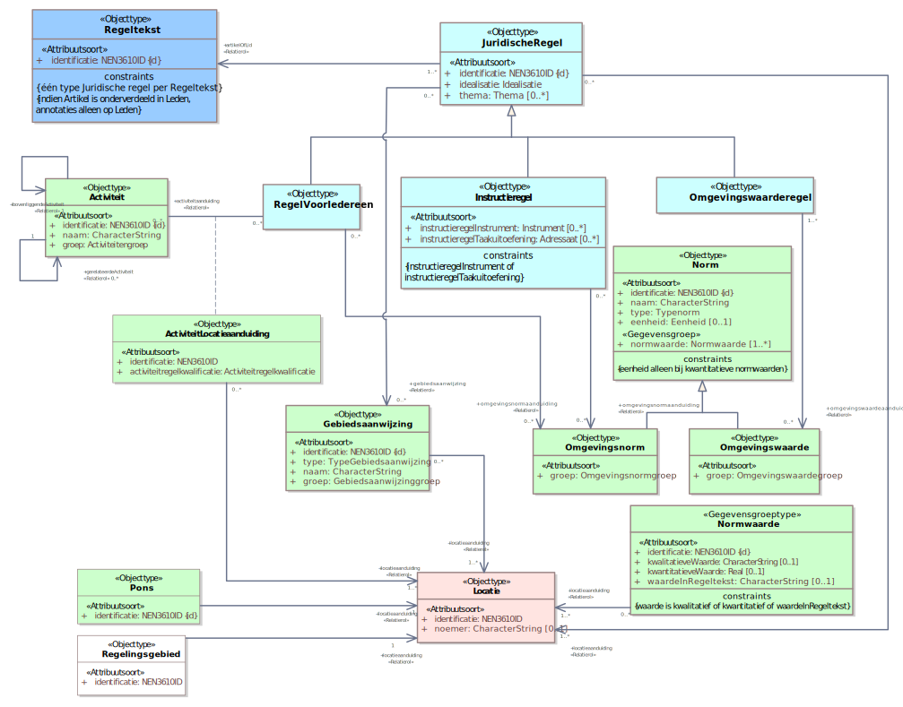UML-diagram artikelstructuur
Net zoals bij vrijetekststructuur begint artikelsgewijze structuur met een OW-object dat zijn oorsprong kent uit OP, namelijk de Regeltekst. Deze bevat een verwijzing naar het ID dat vanuit OP hoort bij een artikel of een lid (zie 3.1.2). Vervolgens kunnen er een of meerdere Juridische regels zijn die verbonden zijn aan de regeltekst. Een juridische regel heeft drie subtypen (RegelVoorIedereen, Instructieregel, Omgevingswaarderegel) die allen afzonderlijke relaties hebben met de verschillende OW-objecten. Deze OW-objecten zijn: Gebiedsaanwijzing, Activiteit, Omgevingswaarde en Omgevingsnorm. Een Omgevingsnorm of Omgevingswaarde hebben altijd een Normwaarde, dit kan zijn een kwalitatieve of kwantitatieve waarde. Vervolgens hebben Normwaarde, Activiteit en Gebiedsaanwijzing nog een relatie met een Locatie. De locatie is een supertype van ofwel een lijn, punt, gebied of een groep van lijnen, punten of gebieden. Uiteindelijk heeft ieder subtype van locatie een geometrie die als los GML-bestand wordt meegeleverd (zie 3.1.4). Aanvullend hierop heeft de artikelstructuur een Pons-object die alleen gebruikt kan worden bij het omgevingsplan, dit is een losstaand objecttype dat een relatie heeft met een Locatie (zie 4.3.8).
Details IMOW
Onderstaande diagrammen bevatten een nadere detaillering van objecten uit het IMOW
OW-object
In de lopende tekst wordt gesproken over OW-object. In de uitwisseling (en dus in het UML) wordt OWobject gebruikt. Instanties van de in dit diagram genoemde klasses (en subklasses) kunnen voorkomen in het IMOW deel van een aanlevering.
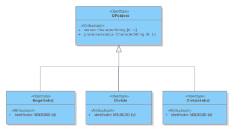UML-diagram OW-objecten
OP-object
OP-objecten zijn binnen de context van IMOW OW-objecten die een rechtstreekse verwijzing bevatten naar een geïdentificeerd onderdeel van de STOP tekst. Deze verwijzing is opgenomen in het wId attribuut.
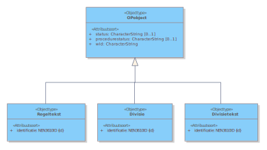UML-diagram OP-objecten
In de lopende tekst wordt gesproken over OP-object. In de uitwisseling (en dus in het UML) wordt OPobject gebruikt.
Activiteit
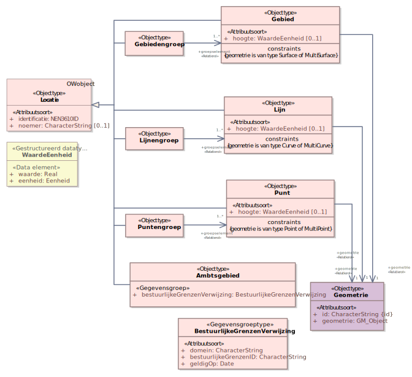UML-diagram Activiteit
Locatie
Locatie modelleert de locatie die aan OW-objecten wordt toegekend. Het is een apart object dat locatie specificeert in punt, lijn, gebied en samengestelde groepen daarvan. Met een verwijzing naar Geometrie worden de coördinaten opgenomen. De Geometrie objecten worden uitgewisseld in een apart geometrie-bestand.
UML-diagram Locatie
Kaart en Kaartlaag
Het model kaart modelleert de onderdelen die nodig zijn om een kaart te benoemen en kaartlagen samen te stellen uit locatie en inhoudelijke informatie van andere OW-objecten.
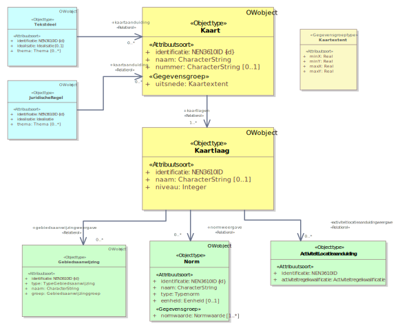UML-diagram Kaart en kaartlaag
SymbolisatieItem
Met SymbolisatieItem wordt met een symbolisatiecode de kleur en patroon weergave van onderdelen op een kaart gespecificeerd.
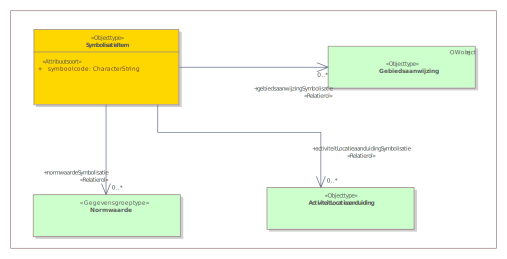UML-diagram SymbolisatieItem
Verhouding OP en OW
Tussen de twee standaarden zijn er drie objecttypen die de samenhang tussen het OP- en het OW-deel vormgeven, dit zijn: Regeltekst, Divisie en Geometrie. OP maakt ook onderscheid tussen de vrijetekststructuur en artikelsgewijze structuur.
Vrijetekststructuur in OP
Vrijetekststructuur in OP bouwt gebruikt twee elementtypen, namelijk: Divisie en Divisietekst. Het hoogste niveau is altijd een Divisie, deze mag onderliggende Divisies bevatten waar uiteindelijk ook een Divisietekst met Inhoud in moet zitten. De Inhoud bevat alleen inhoudelijke tekst. De Divisie wordt gebruikt om de tekst te structureren in bijvoorbeeld verschillende hoofdstukken of paragrafen.
Binnen OW is Divisie een subklasse van OP-object. Dit betekent dat er vanuit Divisie een verwijzing is naar de wId (identificatie) in OP ofwel de wId van de Divisie in OP en naar de identificatie van de regeling in OP, de wId van de regeling. Zo zorgt het OW dat er op het diepste inhoudelijke niveau een verwijzing is naar het OP-deel.
Artikelsgewijze structuur in OP
OP bouwt artikelsgewijze structuur op door te benoemen welke elementen binnen een ander element mogen vallen. Zo heeft bijvoorbeeld binnen een Regeling een Hoofdstuk de mogelijkheid om meerdere Paragrafen te bevatten of meerdere Artikelen, een Paragraaf kan op zijn beurt weer meerdere Artikelen of Subparagrafen bevatten. Zodoende kom je uiteindelijk uit op het diepste niveau, namelijk Artikel waarbinnen Inhoud moet zitten, hier staat de inhoudelijke tekst van het artikel in.
Binnen OW is Regeltekst een subtype van OP-object, dit betekent dat er vanuit Regeltekst een verwijzing is naar de identificatie in OP ofwel de wId van het artikel en naar de identificatie van de regeling vanuit OP, de WorkID van de regeling. Zo zorgt het OW ook bij artikelsgewijze structuur dat er op het diepste inhoudelijke niveau een verwijzing is naar het OP-deel.
Geometrie in OP
In OP wordt gebruik gemaakt van een andere modelconstructie om tekst en data aan geometrie te koppelen dan in OW. Het element dat vanuit OP gebruikt wordt om naar geometrieën te verwijzen is een geografisch informatieobject (GIO). Het OP krijgt altijd een GIO indien er een geometrie wordt aangeleverd. Een GIO zorgt voor de koppeling in OP tussen een inhoudelijk deel van het besluit en een geometrie (ofwel het werkingsgebied van de regel).
In OW worden geen GIO’s aangeleverd, maar juist locaties, zoals toegelicht in 2.2 en 2.3. Uiteindelijk verwijst zowel OW als OP naar hetzelfde geometrie-bestand, maar op een andere manier (OP via GIO’s en OW via Locaties).
Technische implementatie IMOW
Dit hoofdstuk schrijft de technische invulling van het IMOW technisch voor. Paragraaf 3.1 schrijft voor welke OW-bestanden moeten worden aangeleverd. Paragraaf 3.2 stelt eisen aan de aanlevering.
OW-bestanden
Een OW-aanlevering bestaat uit de volgende bestanden:
OW-manifest [verplicht]
OW-regelingsgebied [verplicht, per omgevingsdocument moet altijd het gebied van de regeling een keer zijn aangeleverd. Dit betekent niet dat iedere aanlevering per se een regelingsgebied moet bevatten.]
OW-specifieke annotaties, dit kunnen zijn:
Activiteiten
Gebiedsaanwijzingen
Kaart
Omgevingsnormen
Omgevingswaarden
Pons(en)
Regeltekst(en)
Tekstdeel
Hoofdlijn
OW-Locaties (die verwijzen naar de ID van de geometrie in de meegeleverde GIO, of in het geval van een Ambtsgebied een verwijzing naar de bestuurlijkeGrenzen-voorziening)
OW-manifest
De OW bestanden zijn opgesomd in het OWmanifest. Hierin plaats je de versie van de regeling waar de aanlevering bij hoort. Vervolgens specificeer je in dit bestand de OW-specifieke annotaties die je meelevert. Hierdoor staat per OW-bestand alleen dezelfde soort objecten gedefinieerd. Het OW-manifest bevat niet de GML-bestanden; deze staan in het (OP-)manifest.
Zie de opgeleverde voorbeeldbestanden voor een concreet voorbeeld van een manifest.
Regeltekst
In het regeltekst-bestand leg je de koppeling tussen de gegevens vanuit het IMOP en het IMOW. Dit gebeurt middels het OW-object van Regeltekst. Deze Regeltekst bevat twee attributen die verwijzen naar het IMOP, dit zijn wId en wIdRegeling.
wId verwijst naar het ID van het artikel of lid uit IMOP.
wIdRegeling verwijst naar het ID van de regeling uit IMOP.
Regeltekst heeft zelf ook nog een identificatie, hier wordt naar verwezen vanuit OW-objecten.
In het document van Regeltekst dien je ook Juridische Regels te definiëren. Een juridische regel maakt het mogelijk om te duiden welke OW-objecten worden aangemerkt in een bepaald artikel of lid. Juridische Regel is een abstract objecttype dat drie subtypen heeft, namelijk: RegelVoorIedereen, Instructieregel en Omgevingswaarderegel.
De Juridische regels hebben een identificatie,. Tevens hebben ze een attribuut genaamd: ‘artikelOfLid’, welke verwijst naar de OW-Regeltekst. Vul hierin dezelfde waarde van identificatie in als de waarde die is opgenomen in de OW-Regeltekst.identificatie.
Verder kennen OW-objecten ook onderlinge relaties. Zo heeft een Juridische regel een relatie naar o.a. een Activiteit, Omgevingsnorm, Gebiedsaanwijzing en andere objecten. De XSD’s kennen hiervoor een Ref element, zoals ActiviteitenRef. Vul hierin de identificatie in van het gerelateerde object, oftewel de waarde die staat in het element identificatie .
OW-specifieke annotaties
Naast Regeltekst zijn er meerdere OW-objecten die meegeleverd kunnen worden in het IMOW.
Zo heeft een Activiteit een relatie naar een Locatie. De XSD’s kennen hiervoor een Referentie-element, zoals LocatieRef. Vul hierin de identificatie in van het gerelateerde objecttype, dit is de waarde die staat in het element identificatie van het desbetreffende object.
Het is de bedoeling dat de identificaties van OW-objecten in de OW-bestanden geschikt moeten zijn voor het bevoegd gezag (BG) zelf en voor gebruik/afname vanuit de landelijke voorziening digitaal stelsel Omgevingswet (DSO-LV) door het DSO, de BG en derden.
De identificatie van een OW-object, zoals een Locatie, krijgt daarom bij BG een lokale identificatie die bepaald wordt door BG zelf. Deze lokale identificatie komt vervolgens in alle ketens herkenbaar beschikbaar en moet daarom globaal uniek zijn, of gemaakt (kunnen) worden, zodat deze geschikt is voor gebruik in de LVBB en DSO-LV en afnemers daarvan.
Onderstaande beschrijft de specificatie hiervoor.
De lokale identificatie vormt de basis voor de keten van BG naar DSO en weer terug naar BG of derden.
Bij uitwisseling van informatie in ketens met andere partijen, dan wordt deze lokale identificatie globaal uniek gemaakt, via vaste afspraken (zie 3.2.1).
Keten van plan tot publicatie, opname in OP bestanden: zie OP specificatie.
Keten van plan tot publicatie, opname in OW bestanden: zie hieronder.
Als er sprake is van informatie die én in OW-bestanden zit én in OP-bestanden zit, dan is de lokale identificatie het verbindende gegeven.
Voor de zelfstandig leesbaarheid van IMOW-standaard is de inhoud van de genoemde standaard Basisgeometrie en het schema ook opgenomen in IMOW.
GML-versie en profiel: GML 3.2.2 – SF-0. Simple features profile 0 is gekozen omdat de inhoud van dit model geen constructies heeft die complexer zijn dan SF-0. Voor geometrietypen is er tussen SF-0, SF-1 en SF-2 geen verschil.
Coördinaatreferentiestelsel: Het is verplicht om de srsName in te vullen op het hoogste niveau van een geometrie. Dat betekent dat van een samengestelde geometrie, een multi-geometrie, alleen op het niveau van de samenstelling de srsName verplicht is ingevuld.
De beschrijving van de respectievelijke EPSG codes zijn te vinden onder de url's met het format: "http://www.opengis.net/def/crs/EPSG/0/""epsgcode". Bijvoorbeeld voor EPSG 28992 is dat: https://www.opengis.net/def/crs/EPSG/0/28992
Momenteel worden in het DSO de 3D-coördinatenreferentiestelsels nog niet ondersteund (EPSG:4937, EPSG:7415, EPSG:7423).
gml:id: Voor implementatie in GML zijn er aanvullende specificaties als het gaat om het invullen van een gml:id attribuut. Dit gml:id attribuut heeft geen informatiewaarde maar is nodig om interne en externe referenties te realiseren voor gebruik binnen het gml formaat. Voor de GML 3.2.1 was dit een verplicht element maar voor GML 3.2.2 is dit optioneel.
Indien de optionele gml:id wordt toegepast dient deze globaal uniek te zijn en mag de waarde conform de gml specificaties alleen met een letter of een underscore beginnen.
Nauwkeurigheid van coördinaten: Coördinaten opgenomen bij een geometrie worden standaard uitgewisseld met een getalsnauwkeurigheid van 1 mm of het equivalent daarvan in graden. Voor RD, NAP en ETRS89 komt dat overeen met de volgende nauwkeurigheden:
RD in meters 3 decimalen (1 mm);
NAP-hoogte in meters 3 decimalen (1 mm);
ETRS89-breedte in graden 8 decimalen (1,1 mm);
ETRS89-lengte in graden 8 decimalen (0,7 mm);
ETRS89-hoogte in meters 3 decimalen (1 mm).
Alles wat nauwkeuriger is wordt afgerond op deze nauwkeurigheid van 3 of 8 decimalen. Afronding is volgens de volgende regel:
0.0015 -> 0.002;
0.0014 -> 0.001.
Eisen bij aanleveren
Bij het aanleveren dient er rekening gehouden te worden met verschillende aspecten. In 3.2.1 wordt beschreven hoe de identificatie van de objecten er uit dient te zien. In 3.2.2 en 3.2.3 worden de Status en Procedurestatus beschreven. In 3.2.4 wordt toegelicht hoe de XSD’s er uitzien en waar deze te vinden zijn. In 3.2.5 worden waardelijsten beschreven. In 3.2.6 wordt het toekennen van OW-objecten aan regeling vastgelegd. Paragraaf 3.2.7 stelt eisen aan het verwijzen tussen verschillende OW-objecten. Paragraaf 3.2.8 legt vast hoe de functionele structuur wordt behouden. Paragraaf 3.2.9 stelt extra regels voor documenten van het type tijdelijk regelingdeel.
Identificatie van OW-objecten
De wijze van het identificeren van objecten in het IMOW volgt de NEN3610-standaard. De identificatie volgt de volgende reguliere expressie:
Alle gegevens die worden aangeleverd vanuit het IMOW dienen te starten met nl.imow-
(gm|pv|ws|mn|mnre)
keuze voor een code voor de bestuurslaag van de bronhouder: gm voor gemeente, pv voor provincie, ws voor waterschap of mnre voor ministerie. De bronhouder is het bevoegd gezag dat het besluit neemt waarmee de Regeling wordt ingesteld of gewijzigd.
[0-9]{1,6}
de overheidscode van de bronhouder, maximaal 6 cijfers
keuze voor de naam van het IMOW objecttype van het object waar de identificatie betrekking op heeft
\.
een punt
[A-Za-z0-9]{1,32}
Een codereeks van minimaal 1 en maximaal 32 alfanumerieke tekens, te bepalen door de bronhouder
De lokale identificatie als geheel wordt dan bijvoorbeeld: nl.imow-gm0200.gebied.2019000001
Het bestuurlijkeGrenzenID
Voor Ambtsgebieden is een extra identificatie nodig die verwijst naar de bestuurlijkeGrenzen-voorziening[1] https://brk.basisregistraties.overheid.nl/bestuurlijke-grenzen-api . Deze identificatie is de bestuurlijkeGrenzenID en ziet als volgt uit:
Onderdeel van reg. exp.
Betekenis
(GM|PV|WS|LND)
keuze voor een code voor de bestuurslaag* van de bronhouder: GM voor gemeente, PV voor provincie, WS voor waterschap of LND voor het Rijk**
[A-Z0-9.]{1,7}
de overheidscode van het bevoegd gezag i.r.t. het bestuurlijk gebied zoals bekend in de bestuurlijkeGrenzen-voorziening. Dit bestaat uit hoofdletters, punten en cijfers, met een maximum van 7 tekens.
De lokale identificatie als geheel is dan bijvoorbeeld: GM0297 of LND6030.A
Status
Het status veld in een OW-object heeft de volgende betekenis:
Als het veld status geen waarde heeft wordt aangegeven dat het om een actieve versie van een OW-object gaat.
Als het veld status de waarde ‘B’ heeft wordt aangegeven dat dat OW-object beëindigd moet worden. Het stelsel zal vervolgens het object op inactief zetten, en het zal alleen nog maar getoond worden als iemand een tijdreis-vraag stelt.
Procedurestatus
Het veld procedurestatus in een OW-object kan de volgende waarden hebben:
Als het veld procedurestatus geen waarde heeft dan wordt het OW-object beschouwd als behorend bij vastgestelde regelgeving.
Als het veld procedurestatus de waarde ‘ontwerp’ hoor het een OW-object bij een ontwerpbesluit en moet het als ontwerp getoond moet worden. Het object hoort niet bij vastgestelde regelgeving.
XSD-bestanden
OW-objecten moeten worden aangeleverd in XML bestanden. Een aanlevering met XML-bestanden moet valide zijn volgens de XML-schema bestanden uit https://register.geostandaarden.nl/xmlschema/tpod/v2.0.0/ .
Naast deze technische validatie moeten de OW-objecten ook voldoen aan de functionele eisen zoals gespecificeerd in dit document.
Waardelijsten
In CIM-OW is te vinden welke attributen als datatype een waardelijst hebben. Bijvoorbeeld, een activiteit heeft een attribuut groep, waarvan de waarde uit de waardelijst ActiviteitenGroep moet komen. In hoofdstuk 4 is te zien dat een waarde correspondeert met een waardelijst als dit is aangegeven in de toelichting of bij het datatype URI.
Bij het valideren van de waarden wordt binnen het OW de volgende reguliere expressie gehanteerd:
Vervolgens controleert het DSO of de waarde voorkomt in de stelselcatalogus. De stelselcatalogus is publiekelijk beschikbaar.
Toekennen van OW-objecten aan regelingen
Een OW-object hoort bij een regeling. Als een besluit een regeling wijzigt horen de OW-objecten die in dat besluit ontstaan bij die regeling. Je kunt OW-objecten alleen wijzigen in wijzigbesluiten die die betreffende regeling wijzigen. Dit is vastgelegd in de volgende regels:
Regel: Het WorkIDRegeling van de OW-Aanlevering waarin een OW-object ontstaat bepaalt bij welke regeling een OW-object hoort.
Regel (TPOD1200): Een OW-object mag alleen gewijzigd worden in een OW-aanlevering die hoort bij een besluit dat de regeling wijzigt waar het OW-object bij hoort.
Verwijzingen tussen OW-objecten
In OZON mag een actief OW-object niet verwijzen naar een beëindigd OW-object. Daarom moet een besluit dat een OW-object beëindigt ook alle verwijzingen naar dat OW-object beëindigen. Dit kan alleen als het bevoegd gezag die verwijzingen kan wijzigen, hiertoe introduceren we een regel die verwijzingen naar OW-objecten van andere bevoegd gezagen inperkt:
Regel (TPOD1950):
Een OW-object behorend bij een regeling niet zijnde een tijdelijk regelingdeel mag alleen verwijzen naar een OW-object behorend bij een regeling van hetzelfde bevoegd gezag, met uitzondering van de relatie bovenliggendeActiviteit van het OW-object Activiteit, waarvoor de specifieke regels van paragraaf 3.2.8 gelden;
een OW-object behorend bij een regeling niet zijnde een tijdelijk regelingdeel mag niet verwijzen naar een OW-object behorend bij een tijdelijk regelingdeel;
een OW-object behorend bij een tijdelijk regelingdeel mag alleen verwijzen naar een OW-object behorend bij hetzelfde tijdelijk regelingdeel, met uitzondering van de relatie bovenliggendeActiviteit van de tophaak-Activiteit van het tijdelijk regelingdeel, waarvoor de specifieke regels van paragraaf 3.2.9 gelden.
De functionele structuur
De activiteiten in het stelsel vormen samen de ‘functionele structuur’. Deze boomstructuur bevat alle Activiteit objecten in de regelingen en de hiërarchie wordt bepaald door de bovenliggendeActiviteit relatie van de OW-Objecten van het type Activiteit. In Figuur 11 is de het bovenste deel van functionele structuur getekend. Met Placeholder-Regeling wordt bedoeld de regeling die, met het opschrift Omgevingswet, in het stelsel is ingebracht met uitsluitend het doel om beschikbaar te stellen de bovenste Activiteiten van de functionele structuur zoals ‘Activiteit met gevolgen voor de fysieke leefomgeving’ en ‘Activiteit gereguleerd in het omgevingsplan’, de Activiteiten die zijn genoemd in artikel 5.1 Ow en enkele Activiteiten van de AMvB’s en de Omgevingsregeling. De regels in deze paragaaf zorgen ervoor dat de hiërarchie van de functionele structuur behouden blijft bij wijzigingen.
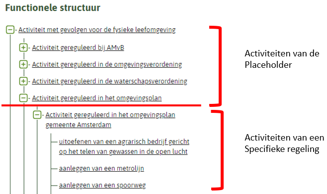: de top van de hiërarchie van de functionele structuur
De volgende regel schrijft de naam en aanwezigheid van een tophaak Activiteit in regelingen voor:
Regel (TPOD1951):Met uitzondering van AMvB en ministeriële regeling moet in iedere Regeling waarin één of meer Activiteiten zijn geannoteerd één zogenaamde tophaak voorkomen:
voor de omgevingsverordening is dat de meest bovenliggende Activiteit van die Regeling; de naam van deze Activiteit moet zijn ‘Activiteit gereguleerd in de omgevingsverordening <naam provincie>’;
voor de waterschapsverordening is dat de meest bovenliggende Activiteit van die Regeling; de naam van deze Activiteit moet zijn ‘Activiteit gereguleerd in de waterschapsverordening <naam waterschap>’;
voor het omgevingsplan is dat de meest bovenliggende Activiteit van die Regeling; de naam van deze Activiteit moet zijn ‘Activiteit gereguleerd in het omgevingsplan gemeente <naam gemeente>’.
De volgende regels schrjven voor hoe de relatie bovenliggendeActiviteit moet worden ingevuld:
Regel (TPOD1952): Voor omgevingsverordening, waterschapsverordening en omgevingsplan geldt, in afwijking van het bepaalde in paragraaf 3.2.7, dat de relatie bovenliggendeActiviteit van een Activiteit niet zijnde de tophaak uitsluitend mag verwijzen naar een andere Activiteit die hoort bij dezelfde Regeling.
Regel (TPOD1953): Voor de relatie bovenliggendeActiviteit van de tophaken geldt, in afwijking van het bepaalde in paragraaf 3.2.7, het volgende:
in de omgevingsverordening moet de relatie bovenliggendeActiviteit van de tophaak verwijzen naar de ‘Activiteit gereguleerd in de omgevingsverordening’ in de Placeholder-Regeling;
in de waterschapsverordening moet de relatie bovenliggendeActiviteit van de tophaak moet verwijzen naar de ‘Activiteit gereguleerd in de waterschapsverordening’ in de Placeholder-Regeling;
in het omgevingsplan moet de relatie bovenliggendeActiviteit van de tophaak moet verwijzen naar de ‘Activiteit gereguleerd in het omgevingsplan’ in de Placeholder-Regeling;
in AMvB en ministeriële regeling mag de relatie bovenliggendeActiviteit van een Activiteit uitsluitend verwijzen naar de ‘Activiteit gereguleerd bij AMvB’ of naar een andere Activiteit die hoort bij de Placeholder-Regeling, bij een AMvB of bij een ministeriële regeling.
Tijdelijk regelingdelen
Tijdelijk regelingdelen, zoals beschreven in de STOP standaard kunnen door een ander bevoegd gezag worden ingetrokken dan het bevoegd gezag waardoor het is aangemaakt. Voor een tijdelijk regelingdeel geldt de volgende regel:
Regel (TPOD1954):
in een tijdelijk regelingdeel waarin één of meer Activiteiten zijn geannoteerd moet één zogenaamde tophaak voorkomen;
de tophaak is de meest bovenliggende Activiteit van het tijdelijk regelingdeel;
de naam van de tophaak annex de meest bovenliggende Activiteit moet zijn ‘Activiteit gereguleerd in <citeertitel tijdelijk regelingdeel>’;
voor een tijdelijk regelingdeel geldt dat de relatie bovenliggendeActiviteit van de tophaak moet verwijzen naar de tophaak van de regeling waaraan het tijdelijk regelingdeel door middel van het element isTijdelijkdeelVan gekoppeld is.
XML-omschrijving
In paragraaf 4.1 wordt beschreven welke gegevens het manifest moet bevatten. Paragraaf 4.2 gaat in op hoe alle OW-bestanden gestructureerd moeten zijn. In paragraaf 4.3 wordt getoond hoe de specifieke OW-objecten vanuit Artikelstructuur er uitzien. In paragraaf 4.4 wordt getoond hoe OW-aanleveringen van Vrijetekststructuur er uitzien. Paragraaf 4.5 gaat in op het regelingsgebied. Paragraaf 4.6 beschrijft het SymbolisatieItem.
Voor de tabellen in dit hoofdstuk geldt dat in de kolom Type tussen de haakjes het maximum aantal karakters voor het veld is toegevoegd. De volgorde van de elementen maakt uit voor het aanleveren, kortom een aanlevering is niet conform het IMOW bij het afwijken van de in deze paragraaf getoonde volgorde van elementen.
Manifest
Het manifest beschrijft de inhoud van de aanleveringen.
Element
M(ultipliciteit)
Type
Toelichting
Aanleveringen
[1..1]
domein
[1..1]
String(80)
Omschrijving van de dataset
IMOWversie
[0..1]
String
De IMOW-versie waarmee is aangeleverd in het formaat x.y..
Aanlevering
[1..*]
WorkIDRegeling
[1..1]
String(255)
Het ID van de Regeling (aan de OP-kant)
DoelID
[1..1]
String(255)
Het ID van het Doel (aan de OP-kant)
Bestand
[1..*]
Een afzonderlijk bestand dat opgenomen is in de aanlevering
Naam
[1..1]
String(255)
De naam van het bestand
objectType
[1..*]
String(80)
Het specifieke objecttype dat voorkomt in het bestand
owBestand
Het owBestand is hetgeen dat alle inhoud van een specifiek bestand bevat, alle OW-aanleveringen maken hier gebruik van.
Element
M(ultipliciteit)
Type
Toelichting
owBestand
[1..1]
standBestand
[1..1]
dataset
[1..1]
String
Omschrijving van de dataset
inhoud
[1..1]
gebied
[1..1]
String(80)
Naam van het gebied
leveringsId
[1..1]
String(255)
Een identificatie van de levering
objectTypen
[1..1]
De objecttypen die in dit specifieke bestand worden meegeleverd
objectType
[1..*]
String(80)
Het specifieke objecttype dat voorkomt in het bestand
stand
[1..*]
Aanlevering van een specifiek OW-object.
owObject
[1..1]
Het specifieke OW-object. Zie verdere paragrafen voor invulling per OW-object.
Artikelstructuur
De objecten uit deze paragraaf kunnen worden aangeleverd bij een omgevingsdocument dat gestructureerd wordt door middel van artikelen.
Regeltekst
Doel van het objecttype Regeltekst is het leggen van de verbinding tussen de Juridische regel uit het Omgevingswet-domein en het artikel of lid uit STOP.
Element
M(ultipliciteit)
Type
Toelichting
owObject
[1..1]
Container van het specifieke OW-object.
Regeltekst
[1..1]
Element bedoeld voor koppeling tussen artikel/lid en juridische regel.
Een Juridische regel is een abstract objecttype dat drie verschijningsvormen heeft: RegelVoorIedereen, Instructieregel en Omgevingswaarderegel. De juridische regel is nodig om verschillende inhoudelijke annotaties te kunnen specificeren. Bij het gebruik van de juridische regel is het verplicht om hetzelfde type Juridische Regel te hanteren per Regeltekst.
Het artikel of lid waar de Juridische regel bij hoort.
[@RegeltekstRef]
[1..1]
xlink(80)
Verwijzing naar de identificatie van de Regeltekst waar de Juridische regel bij hoort.
thema
[0..*]
URI(255)
Waarde uit de waardelijst ‘Thema’.
locatieaanduiding
[1..1]
De Locatie waar de Juridische regel van kracht is.
[@LocatieRef]
[1..*]
xlink(80)
Verwijzing naar de identificatie(s) van de Locatie waar de Juridische regel van kracht is.
gebiedsaanwijzing
[0..1]
De aanwijzing van een specifiek gebied.
[@GebiedsaanwijzingRef]
[1..*]
xlink(80)
Verwijzing naar de identificatie(s) van de Gebieden die worden aangewezen in de Juridische regel.
kaartaanduiding
[0..1]
Specifieke kaart die geduid wordt
[@KaartRef]
[1..*]
xlink(80)
Verwijzing naar de identificatie(s) van de Kaarten die worden geduid in de Juridische regel.
activiteitaanduiding
[0..*]
De activiteit die gereguleerd wordt in de Juridische regel.
[@ActiviteitRef]
[1..1]
xlink(80)
Verwijzing naar de identificatie van de Activiteit.
ActiviteitLocatieaanduiding
[1..1]
De locatie waar de activiteit gereguleerd wordt. Deze komt even vaak voor als de ActiviteitRef.
identificatie
[1..1]
NEN3610
(80)
Identificatie van deze ActiviteitLocatieaanduiding zie 3.2.1. Een ActiviteitLocatieaanduiding hoort bij precies één combinatie van een Activiteit en een Juridische regel. Dit betekent dat iedere combinatie van een Activiteit en een Juridische regel een eigen unieke identificatie moet krijgen. In eerder versies van de standaard stond dit niet helder geformuleerd daarom wordt dit bij implementatie van de standaard nog niet afgedwongen. In een toekomstige versie kan dit wel gebeuren.
activiteitregelkwalificatie
[1..1]
String (255)
Waarde uit de waardelijst ‘activiteitregelkwalificatie’.
Locatieaanduiding
[1..1]
De locatie die gekwalificeerd wordt door de activiteit.
[@LocatieRef]
[1..*]
xlink(80)
Verwijzing naar de identificatie(s) van de locatie die gekwalificeerd wordt(/worden) door de activiteit.
omgevingsnormaanduiding
[0..*]
De omgevingsnorm die gesteld wordt.
[@OmgevingsnormRef]
[1..*]
xlink(80)
Verwijzing naar de identificatie(s) van de omgevingsnorm die gesteld wordt.
Instructieregel
Element
M(ultipliciteit)
Type
Omschrijving
owObject
[1..1]
Container van het specifieke OW-object.
Instructieregel
[1..1]
Juridische regel die bedoeld is voor een ander bevoegd gezag.
Een Activiteit die gerelateerd is aan de activiteit.*
[@ActiviteitRef]
[1..*]
xlink(80)
Verwijzing naar de identificatie van de Activiteit.
bovenliggendeActiviteit
[1..1]
De activiteit die hiërarchisch boven de Activiteit ligt.**
[@ActiviteitRef]
[1..1]
xlink(80)
Verwijzing naar de identificatie van de Activiteit.
Gebiedsaanwijzing
Een gebiedsaanwijzing is het aanwijzen van een specifiek gebied. De Gebiedsaanwijzing kan zowel bij Juridische regels (artikelstructuur) als bij Tekstdelen (vrijetekststructuur) voorkomen.
Waarde uit de waardelijst ‘TypeGebiedsaanwijzing’.
naam
[1..1]
String(255)
Hoe het aangewezen gebied genoemd wordt.
groep
[1..1]
String(255)
Waarde uit de waardelijst ‘gebiedsaanwijzinggroep’.*
locatieaanduiding
[1..1]
De Locatie die wordt aangewezen.
[@LocatieRef]
[1..*]
xlink(80)
Verwijzing naar de identificatie(s) van de Locatie waar een specifiek gebied wordt aangewezen.
* De waarde die gekozen kan worden uit de waardelijst gebiedsaanwijzinggroep is afhankelijk van de waarde die gekozen wordt uit ‘TypeGebiedsaanwijzing’.
Omgevingsnorm
Een omgevingsnorm is het vastleggen van normwaarden als referentiepunt ten behoeve van het handelen in de fysieke leefomgeving.
Dit optionele attribuut maakt het mogelijk om een mens leesbare relatie te leggen tussen de OW-Locatie en de naam van het GIO die in de tekst van de regel voorkomt.
hoogte
[0..1]
De hoogte die hoort bij de Locatie.
waarde
[1..1]
Decimal (80)
De numerieke waarde van de hoogte.
eenheid
[1..1]
String (255)
De waarde uit de waardelijst ‘Eenheid’.
geometrie
[1..1]
Het object waar de coördinaten zijn vastgelegd. Dit valt binnen een GIO in de OP-aanlevering.
[@GeometrieRef]
[1..1]
xlink(80)
Verwijzing middels identificatie naar de bijbehorende Geometrie.
*Dit kan ook lijn of punt zijn.
Ambtsgebied
Element
M(ultipliciteit)
Type
Omschrijving
owObject
[1..1]
Container van het specifieke OW-object.
Ambtsgebied
[1..1]
Bijzondere vorm van Gebied die samenvalt met het ambtsgebied van een bepaald bevoegd gezag: het gebied waarover dat bevoegd gezag de bevoegdheid tot regeling en bestuur heeft.
De naam die een locatie krijgt in een bepaalde regel.
bestuurlijkeGrenzenVerwijzing
[1..1]
Verwijzing naar bestuurlijkeGrenzen-voorziening
BestuurlijkeGrenzenVerwijzing
[1..1]
Verwijzing naar bestuurlijkeGrenzen-voorziening
bestuurlijkeGrenzenID
[1..1]
Identificatie van bestuurlijk gebied uit bestuurlijkeGrenzen-voorziening, hier geldt de toelichting op bestuurlijkeGrenzenID vanuit 3.2.1.
Domein
[1..1]
String(80)
Het domein van dit object, altijd gelijk aan: ‘NL.BI.BestuurlijkGebied’.
geldigOp
[1..1]
Date
Datum waarop het ambtsgebied geldig was. Indien niet meegegeven dan wordt de huidige datum gebruikt. Zo zullen de regels dan ook meebewegen met het ambtsgebied. Indien wel meegegeven, dan een statische verwijzing naar het ambtsgebied van die datum.
Pons
Element
M(ultipliciteit)
Type
Omschrijving
owObject
[1..1]
Container van het specifieke OW-object.
Pons
[1..1]
Het object dat een gebied duidt waar bestemmingsplannen niet meer getoond hoeven te worden. Bij een regeling hoort maximaal één Pons. Bij een tijdelijk regelingdeel hoort nooit een Pons.
Verwijzing naar de locatie waar de regeling over gaat.
[@LocatieRef]
[1..1]
xlink(80)
Verwijzing naar de identificatie van de Locatie waar de Regeling over gaat.
Symbolisatie
Objecten die te maken hebben met symbolisatie.
SymbolisatieItem
Element
M(ultipliciteit)
Type
Omschrijving
owObject
[1..1]
Container van het specifieke OW-object.
SymbolisatieItem
[1..1]
Object waarmee een symbolisatie meegegeven kan worden die afwijkt van de standaard symbolisatie.
symboolcode
[1..1]
String (20)
Een symboolcode overeenkomstig met de symbolenbibliotheek.
activiteitLocatieaanduidingSymbolisatie
[0..1]
De locatie waar de activiteit gereguleerd wordt.
[@ActiviteitLocatieaanduidingRef]
[1..*]
xlink(80)
Verwijzing naar de identificatie(s) van de Locatie(s) die met de stijl van de symboolcode moeten worden verbeeld..
gebiedsaanwijzing
[0..1]
De aanwijzing van een specifiek gebied.
[@GebiedsaanwijzingRef]
[1..*]
xlink(80)
Verwijzing naar de identificatie(s) van de Locatie(s) die met de stijl van de symboolcode moeten worden verbeeld..
normwaardeSymbolisatie
[0..1]
Een specifiek referentiepunt (waarde) van de norm.
[@NormwaardeRef]
[1..*]
xlink(80)
Verwijzing naar de identificatie(s) van de Locatie(s) die met de stijl van de symboolcode moeten worden verbeeld..
Voor meer toelichting op de werking van het SymbolisatieItem, zie presentatiemodel TPOD.
Verschillen tussen IMOW en CIM-OW
De verschillen tussen het IMOW en CIM-OW worden geduid in twee verschillende paragrafen: de delen van het CIM-OW die niet in het IMOW zitten (5.1) en de delen van het IMOW die het CIM-OW niet bevat (5.2).
CIM-OW-aspecten niet in IMOW
Niet alle gegevens uit het CIM-OW zijn ondergebracht in het IMOW-deel. Namelijk de informatie die in CIM-OW is aangeduid met ‘herkomst: OP’. Dit zijn gegevens die de applicatie van het DSO (OZON) ophaalt uit het IMOP-deel en niet worden aangeleverd door het IMOW, zoals:
Regeltekst.Werkingsgebied – het werkingsgebied wordt afgeleid op basis van de locatieaanduidingen van Juridische regels.
Activiteit.Locatie – hierin zit de locaties waar de activiteit gereguleerd wordt, deze wordt niet aangeleverd via IMOW, maar wordt afgeleid vanuit de activiteitlocatieaanduidingen.
Regeltekst.Omschrijving – hierin zit de inhoud van de Regeltekst, deze wordt niet aangeleverd via IMOW, maar wordt via de OP-bestanden afgeleid.
Omgevingsdocumenten (Regelingen en Omgevingsvergunningen), Bevoegd Gezag, DocumentComponenten. Deze gegevens zijn in het CIM-OW toegevoegd, omdat ze van belang zijn voor het DSO-LV.
De tijdslijnen voor de objectvorming in DSO-LV worden gebaseerd op het omgevingsdocument dat de LVBB maakt en uitlevert.
IMOW-aspecten niet in CIM-OW
Het IMOW kent de volgende verschillen ten opzichte van het CIM-OW:
OWobject en OPobject
Alle objecttypen uit CIM-OW krijgen supertypen (OWobject en OPobject). Dit wordt gedaan voor alle objecttypes uit CIM-OW en hiermee kan de koppeling naar OP afgeleid worden evenals generieke attributen die voor alle aangeleverde objecten gelden (zoals status en procedurestatus).
Gebiedsaanwijzing
Gebiedsaanwijzing is meer generiek opgezet in IMOW dan in CIM-OW. De Functie en het Beperkingengebied zijn zo opgezet dat er andere typen Gebiedsaanwijzingen toegevoegd kunnen worden, zonder impact op de XSD’s. De type gebiedsaanwijzingen kunnen worden meegegeven door het attribuut ‘TypeGebiedsaanwijzing’. De groepen die je kunt selecteren volgen vervolgens uit de verschillende waardelijsten van de specifieke ‘gebiedsaanwijzingstypen’.
Relaties
In IMOW staan de rolnamen centraal in plaats van de naam van de relatiesoort. Voorbeelden hiervan zijn locatieaanduiding, omgevingsnormaanduiding. Deze rolnamen worden ook geïmplementeerd in de XSD’s.
Regelingsgebied
In het IMOW wordt er een specifiek object benoemd dat Regelingsgebied heet. In het CIM-OW is dit op een andere manier vormgegeven. Een regelingsgebied in IMOW koppelt een Locatie aan een Omgevingsdocument, zodat deze Locatie het regelingsgebied van een Omgevingsdocument wordt. Het regelingsgebied uit IMOW wordt in DSO-LV niet tot een OW-object gevormd. In DSO-LV is een regelingsgebied een relatie tussen een Omgevingsdocument en een Locatie, conform CIM-OW.
ActiviteitLocatieaanduiding
In CIM-OW is er per v1.0.3 voor gekozen om dit te modelleren als gegevensgroep, terwijl dit in IMOW nog een relatieklasse is. Er wordt onderzocht of deze modelleringswijze ook in IMOW gewijzigd dient te worden.
Geometrie en GIO
In het IMOW wordt het attribuut Geometrie als apart objecttype getoond. Conceptueel (CIM-OW) is een geometrie een attribuut van een locatie, maar in de implementatie (IMOW) wordt het gezien als een gerefereerd objecttype. Dit objecttype Geometrie is geen zelfstandig objecttype, het hoort altijd als gerefereerde eigenschap bij een Locatie. Hiertoe is het niet toegestaan om twee Locaties naar dezelfde Geometrie te laten verwijzen (noot: inmiddels is gebleken dat er geen probleem is als er twee Locaties naar dezelfde Geometrie verwijzen, daarom wordt er niet op deze regel gevalideerd in de keten en in een volgende versie van de standaard zal deze regel verwijderd worden.) Een Geometrie kan niet zelfstandig gemuteerd worden en historie opbouwen, maar een Locatie kan dat wel.
Geometrie wordt door zowel STOP als IMOP gebruikt. Het BG hoeft daardoor Geometrie maar één keer aan te leveren. Vanwege dat gezamenlijk gebruik is Geometrie in een zelfstandig bestand geplaatst van waaruit zowel een GIO als de informatieobjecten uit IMOW apart naar wordt verwezen. Verschil in 1.0 is wel dat het GML-bestand normwaarden dient te bevatten indien deze bij de geometrie horen. Deze worden middels het GIO-schema geduid, en vallen niet onder het IMOW.
Zie paragraaf 2.4.3 voor het IMOW model voor geometrie en locatie.
Deze geometrie constructie leidt tot de volgende IMOW-attributen:
(Gebied, Lijn, Punt).geometrie: Een verwijzing vanuit Locatie (Gebied, Lijn of Punt) naar een bijbehorende Geometrie.
Geometrie.id: UUID identificatie van de Geometrie
Geometrie.geometrie: Vastleggen van een geometrie middels coördinaten.
Het objecttype Geometrie heeft hierin het algemene ISO-19107 geometrietype GM_Object. In de Locatie-objecten wordt middels een constraint aangegeven wat de beperking op dit algemene type is.
OP-aspecten relevant voor IMOW
In dit hoofdstuk wordt gekeken naar aspecten uit het IMOP die relevant zijn voor het IMOW. Enkele dingen worden toegelicht vanuit OW-perspectief, omdat de samenhang met de OP-standaard relevant is. Er zijn drie OP-onderwerpen die relevant zijn vanuit OW-objectperspectief, dit zijn:
De Regeling en diens Artikelen/Leden/Divisies
De ConsolidatieInformatie uit de Regeling
De GIO’s behorend bij de Regeling
Dit hoofdstuk is op geen enkele manier een vervanging van de OP-documentatie, maar probeert de OP-aspecten die voor IMOW van belang zijn toe te lichten.
De Regeling en diens Artikelen/Leden/Divisies
Alle OW-objecten horen bij een bepaald artikel/lid/Divisie uit een Regeling (die opgesteld is conform de OP-standaard). Vanuit het manifest-ow (4.1) wordt middels het attribuut WorkIDRegeling bij iedere aanlevering aangegeven bij welke Regeling de OW-objecten horen.
In iedere Regeltekst (4.3.1) of Divisie (4.4.1) zit het wId-attribuut, hierin staat de identificatie van het artikel/lid of de divisie aan de OP-kant. Zodoende zijn alle OW-objecten die gekoppeld zijn aan een bepaalde Regeltekst of Divisie terug te vinden in een bepaald deel van een Regeling.
ConsolidatieInformatie
De ConsolidatieInformatie wordt meegegeven aan de OP-kant, maar bepaalt hoe de OW-objecten geversioneerd worden in het DSO. De daadwerkelijke documentatie van ConsolidatieInformatie is te vinden in de bijbehorende OP-documentatie, dit is een extract.
Hieronder een korte opbouw van de structuur van de ConsolidatieInformatie:
Element
M(ultipliciteit)
Type
Omschrijving
ConsolidatieInformatie
[1..1]
De informatie die noodzakelijk is om de aanlevering te consolideren tot een Regeling.
BeoogdeRegelgeving
[1..1]
De beoogde regelgeving die aangeleverd wordt.
BeoogdeRegeling
[0..1]
De Regeling waarvoor informatie aangeleverd wordt.
doelen
[0..1]
de afzonderlijke doelen (c.q. aanleverID’s).
doel
[1..1]
String
de identificatie van het doel waarmee aangeleverd wordt.
instrumentversie
[0..1]
String
de expression-id van de RegelingVersie
eId
[0..1]
String
de eId van het artikel in het besluit dat de regeling instelt.
BeoogdInformatieobject
[0..*]
Een PDF- of GIO die hoort bij de Regeling.
doelen
[1..1]
de afzonderlijke doelen (c.q. aanleverID’s).
doel
[1..1]
String
de identificatie van het doel waarmee aangeleverd wordt.
instrumentVersie
[0..1]
String
de expression-id van het informatieobject
eId
[0..1]
String
de componentnaam (van de regeling) + # + het eId van de ExtIoRef (van het informatieobject)
Tijdstempels
[0..1]
Tijdstempels geven aan wat voor tijdsinformatie er bij de aanlevering hoort.
Tijdstempel
[1..*]
Een individuele tijdstempel.
doel
[1..1]
String
de identificatie van het doel waarmee aangeleverd wordt.
soortTijdstempel
[1..1]
String
het type tijdstempel, dit kan zijn: juridischWerkendVanaf en geldigVanaf
datum
[1..1]
Date
De datum van de tijdstempel.
eId
[1..1]
String
De eId van het artikel uit het Besluit waar deze tijdstempel genoemd wordt.
Het Doel is een gegeven dat ook aanwezig is bij de aanlevering van de OW-informatie, zie manifest-ow (4.1). OW-objecten krijgen de tijdsinformatie van de tijdstempels die horen bij de aanlevering.
Kortom, als er OW-objecten worden aangeleverd bij een besluit dat juridisch werkend is vanaf 1 januari 2022, dan zullen deze OW-objecten ook juridisch werkend zijn vanaf 1 januari 2022. (Het DSO legt drie type tijdstempels vast, namelijk juridischWerkendVanaf, geldigVanaf, en beschikbaarOp, met name beschikbaarOp wordt geregistreerd in het DSO op het moment dat informatie aangeleverd is.)
OP-informatieobjecten
Er zijn twee soorten informatieobjecten die aangeleverd kunnen worden in de OP-standaard, namelijk PDF-documenten en geografische informatieobjecten (GIO’s). In deze en de volgende paragrafen wordt voornamelijk ingegaan op de GIO’s, omdat hier veel vragen over gesteld worden en de samenhang met OW-objecten complex is.
De voornaamste samenhang tussen een GIO en OW is dat de OW-Locaties van het type Gebied/Lijn/Punt (4.3.7.2) een attribuut GeometrieRef hebben dat verwijst naar de identificatie van de Geometrie die te vinden is in de GIO. Kortom, het DSO ontvangt geometrieën doordat de LVBB de geometrie uit de GIO doorstuurt.
GIO’s
Een GIO bestaat uit twee bestanden, namelijk een geografisch vaststellingsdeel (GML) en een service-deel (XML). In dit document wordt alleen het geografisch vaststellingsdeel behandeld, omdat het service-deel niet van belang is voor de OW-objecten. De identificatie van de Geometrie is te vinden in het geografisch deel van de GIO, dit is van belang voor de OW-Locatie (4.3.7.2).
Er zijn twee type GIO’s, namelijk: GIO’s inclusief informatie over normen (Norm-GIO’s) en GIO’s exclusief informatie over normen (GIO’s).
Hieronder informatie over de opbouw (van het geografisch deel) van een GIO:
Element
M(ultipliciteit)
Type
Omschrijving
GeoInformatieObjectVaststelling
[1..1]
De geometrische aanduiding die vastgesteld wordt.
context
[1..1]
De context ten opzichte waarvan de GIO is vastgesteld.
GeografischeContext
[0..1]
De geografische context ten opzichte waarvan de GIO is vastgesteld.
achtergrondVerwijzing
[0..1]
Een verwijzing naar de achtergrondkaart waarop de GIO is gebaseerd.
achtergrondActualiteit
[1..1]
Date
Datum waarop de achtergrond is vastgesteld.
vastgesteldeVersie
[0..1]
De vastgestelde versie van de GIO.
GeoInformatieObjectVersie
[1..1]
Een versie van de GIO.
FRBRWork
[1..1]
identificatie van de GIO (waar deze versie bij hoort)
FRBRExpression
[1..1]
expressie-identificatie van de GIO-versie
groepen
[0..1]
Lijst van groep-elementen die gebruikt worden.
groepID
[1..*]
String
De identificatie van een groep locaties.
label
[1..*]
String
Het label (de naam) die gebruikt wordt om de groep te duiden.
locaties
[1..1]
De locaties die bij deze GIO horen.
Locatie
[1..*]
Een individuele locatie uit de GIO.
naam
[0..1]
De naam van een specifieke locatie zoals te tonen op een kaart. [OW-gegeven noemer bij Gebied/Lijn/Punt 4.3.7.2]
geometrie
[1..1]
Geometrie behorende bij de locatie.
Geometrie
[1..1]
Geometrie behorende bij de locatie.
id
[1..1]
UUID
De identificatie van de geometrie. [OW-gegeven [@GeometrieRef] bij Gebied/Lijn/Punt 4.3.7.2]
geometrie
[1..1]
de inhoud van de geometrie.
gml()
[1..1]
GML
Dit volgt de GML-standaard (SF2). Dit wordt niet verder toegelicht.
Hierbij zijn enkele punten van belang om te weten:
De UUID van de Geometrie wordt ontdubbeld door het DSO, kortom: de OW-Locatie met de noemer ‘Centrumgebied’ met geometrieReferentie ‘d0993715-c485-4e63-b35d-8f68c3cbee3b’ mag in meerdere GIO’s als Locatie staan. Altijd moet de geometrie behorende bij ‘d0993715-c485-4e63-b35d-8f68c3cbee3b’ inhoudelijk dezelfde zijn.
Indien er gebruik gemaakt wordt van groepen, dan dient iedere groep een symbolisatie te hebben (dit wordt vastgelegd in het vaststellingsdeel).
Bij Norm-GIO’s dienen aanvullende gegevens vastgelegd te worden.
Het is verder aan te raden om de noemer van de OW-Locatiegroepen (4.3.7.1) overeen te laten komen met de label van de bijbehorende GIO-groep.
Norm-GIO’s
Indien er normen vastgelegd worden aan de OW-kant, dan ziet de GIO er anders uit dan bij OW-Locaties waar geen norm over is vastgelegd. Hieronder staan de elementen uit de Norm-GIO die overeenkomen met de gewone GIO grijs gemarkeerd:
Element
M(ultipliciteit)
Type
Omschrijving
GeoInformatieObjectVaststelling
[1..1]
De geometrische aanduiding die vastgesteld wordt.
context
[1..1]
De context ten opzichte waarvan de GIO is vastgesteld.
GeografischeContext
[0..1]
De geografische context ten opzichte waarvan de GIO is vastgesteld.
achtergrondVerwijzing
[0..1]
Een verwijzing naar de achtergrondkaart waarop de GIO is gebaseerd.
achtergrondActualiteit
[1..1]
Date
Datum waarop de achtergrond is vastgesteld.
vastgesteldeVersie
[0..1]
De vastgestelde versie van de GIO.
GeoInformatieObjectVersie
[1..1]
Een versie van de GIO.
FRBRWork
[1..1]
identificatie van de GIO (waar deze versie bij hoort)
FRBRExpression
[1..1]
expressie-identificatie van de GIO-versie
eenheidid
[0..1]
URI
De URI uit waardelijst ‘Eenheid’ (alleen van toepassing bij de kwantitatieve waarde) [OW-gegeven: eenheid van omgevingsnorm (4.3.5 ) /omgevingswaarde (4.3.6)]
eenheidlabel
[0..1]
String
De label (naam) die getoond dient te worden bij eenheid.
normid
[1..1]
URI
De URI uit waardelijst ‘TypeNorm’ . [OW-gegeven: type van omgevingsnorm (4.3.5 ) /omgevingswaarde (4.3.6)]
normlabel
[1..1]
String
De naam van de Norm aan de OW-kant. [OW-gegeven: naam van omgevingsnorm (4.3.5 ) /omgevingswaarde (4.3.6)]
locaties
[1..1]
De locaties die bij deze GIO horen.
Locatie
[1..*]
Een individuele locatie uit de GIO.
naam
[0..1]
De naam van een specifieke locatie.
geometrie
[1..1]
Geometrie behorende bij de locatie.
Geometrie
[1..1]
Geometrie behorende bij de locatie.
id
[1..1]
UUID
De identificatie van de geometrie. (Hier wordt naar verwezen vanuit een OW-Locatie[@GeometrieRef].)
geometrie
[1..1]
de inhoud van de geometrie.
gml()
[1..1]
GML
Dit volgt de GML-standaard (SF2). Dit wordt niet verder toegelicht.
kwantitatieveNormwaarde
[0..1]
Decimal
In getallen uit te drukken waarde van de norm.
kwalitatieveNormwaarde
[0..1]
String
In tekst uit te drukken waarde van de norm.
Hierbij zijn nog enkele punten relevant:
De norm-gegevens uit de GIO worden niet doorgestuurd naar het DSO, maar verschijnen in de LVBB-kaartviewer. Dit is omdat de OW-informatie zelf al de normgegevens bevat.
Het is toegestaan om een geometrie die gebruikt wordt voor een Norm ook te gebruiken bij andere OW-objecten.
De normwaarden op een bepaalde locatie uit de GIO dienen overeen te komen met de normwaarden die via OW worden aangeleverd.
Iedere normwaarde dient een symbolisatie te hebben, dit wordt vastgelegd in het vaststellingsdeel van de GIO.
Richtlijn voor het maken van GIO’s o.b.v. OW-objecten
In deze paragraaf wordt toegelicht welke richtlijnen er zijn voor het maken van GIO’s vanuit OW-objecten. Dit zijn richtlijnen en deze worden niet hard gevalideerd door het DSO. Deze richtlijnen zijn gemaakt n.a.v. de expliciete vraag naar hoe je vanuit OW naar GIO’s toe kunt werken.
De richtlijn is als volgt:
Gebruik Locatiegroepen (c.q. de groep-subtypen van Locatie in IMOW (Gebiedengroep, Lijnengroep, Puntengroep) als OW-pendant van de GIO (zie Figuur 5).
Bij gebruik van het OW-object Omgevingsnorm/Omgevingswaarde zou er een Norm-GIO moeten zijn die dezelfde Locaties en kwalitatieve/kwantitatieve Normwaarden bevat als de OW-Norm (zie Figuur 6).
De overige subtypen van Locatie in IMOW (Gebied, Lijn, Punt) zouden moeten corresponderen met de Locatie uit de GIO.
Verwijs vanuit annotaties altijd naar een Locatiegroep, zodat het gelijk loopt met de verwijzing vanuit de tekst (naar de GIO).
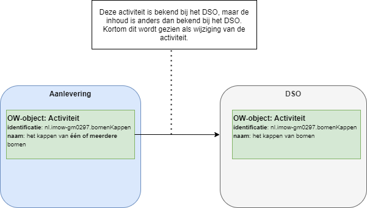Richtlijn voor OW-objecten i.r.t. GIO’s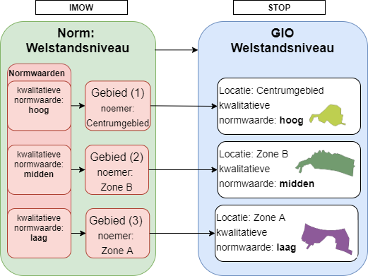Richtlijn voor Normen i.r.t. Norm-GIO’s
Dit heeft de volgende consequenties:
In de GIO kun je geen verschillende IMOW-Locatiesubtypen vermengen (bijv. gebieden en punten in dezelfde GIO).
In het geval dat één IMOW-Gebied in meerdere Gebiedengroepen zit, zou de Locatie ook in meerdere GIO’s voor moeten komen.
Er was met de huidige versie van het IMOW geen eenduidige richtlijn te bedenken voor het indelen van groepen in de GIO.
Muteren met het IMOW
In dit hoofdstuk wordt belicht hoe het werkt als je OW-objecten wilt muteren. Paragraaf 7.1 gaat in op de uitgangspunten die relevant zijn voor het muteren. Vervolgens gaat 7.2 over het muteren van OW-objecten bij toepassen van de tekst-wijzigingsmethode renvooi. Paragraaf 7.3 beschrijft de alternatieve wijzigingsmethode die gebruikt kan worden wanneer het werken met de wijzigingsmethode renvooi nog niet mogelijk is. Paragraaf 7.4 gaat over directe mutaties, dit zijn mutaties waar geen wijzigingsbesluit bij wordt aangeleverd. Paragraaf 7.5 kijkt naar ontwerp-objecten en hoe deze werken i.r.t. muteren.
Uitgangspunten relevant voor muteren
Bij het muteren zijn de volgende drie uitgangspunten van belang:
Stuur alleen gegevens op als deze gewijzigd zijn.
Verwijder expliciet gegevens die niet meer gebruikt worden.
Een wijziging van een object zorgt voor een nieuwe versie van het object.
Stuur alleen gegevens op die gewijzigd zijn
Bij een wijzig-besluit dat de tekst van een regeling wijzigt wil je ook de OW-objecten behorend bij die regeling kunnen wijzigen. Hiervoor stuur je bij een aanlevering alleen de gewijzigde OW-objecten mee.
Het sturen van een OW-object dat inhoudelijk niet gewijzigd leidt tot een foutmelding.
(OZON0108 “Het aanleveren van een OW-object mag alleen indien de gegevens aangepast zijn t.o.v. de vorige versie van het OW-object.”). Het is bij een het aanleveren van een wijzig-besluit dus van belang te weten welke OW-objecten onderdeel waren van vorige versie van de regeling zodat je weet wat je moet wijzigen.
Verwijder expliciet gegevens die niet meer gebruikt worden
Voor OW-objecten geldt dat het verplicht is om expliciet OW-objecten te verwijderen die niet meer gebruikt worden.
Dit gebeurt door de status ‘B’ ( van beëindigen) mee te geven.
Een wijziging van een object zorgt voor een nieuwe versie van het object
Dit uitgangspunt geeft aan dat het wijzigen van een object er altijd voor zorgt dat de vorige versie van het object nog steeds bestaat. Hierdoor is kun jetijdreizen in het DSO, wat betekent dat je kunt kijken hoe de toestand er op een bepaalde datum uitzag. Kortom, het beëindigen van een object zorgt er alleen voor het deactiveren van een object, aangezien het object nog steeds bestaat in het DSO.
De tijdstempels van de ConsolidatieInformatie van het Besluit bepalen wanneer bepaalde OW-informatie juridisch werkend is.
OW-objecten bij wijzigingsmethode renvooi
Uitgangspunt van de STOP/TPOD-standaard is dat bij het wijzigen van een regeling de wijzigingsmethode renvooi wordt toegepast. Bij deze methode hoort bij een wijzigingsbesluit een RegelingMutatie met hierin allerlei mutatieacties. Deze staan beschreven op de documentatiepagina over renvooieren en muteren van tekst van de OP-standaard.
Voor OW-objecten betekent het aanleveren van een object:
Wanneer een OW-object wordt aangeleverd met een nog niet eerder gebruikt identificatie is er sprake van een nieuw object.
Bij het wijzigen van een object wordt dezelfde identificatie meegegeven, maar is de invulling van het object anders – dit wordt door het DSO als mutatie van een OW-object gezien.
Bij het laten vervallen van een object wordt een status ‘B’ meegegeven.
Nieuw object
: Het aanleveren van een nieuw OW-object
Om te constateren of iets een nieuw object is wordt er gekeken naar de identificatie.
Is de identificatie van het object onbekend bij het DSO, dan wordt het object gezien als nieuw object.
Voor een nieuw object geldt een aantal regels:
Regel: De eerste keer dat een object wordt aangeleverd mag deze niet de status beëindigd hebben (OZON0104).
Regel: Als er verwezen wordt naar andere OW-objecten, dan moeten deze bestaan (OZON0109)
Dit betekent dat de OW-objecten waar naar verwezen wordt ofwel aangeleverd moeten worden ofwel al aangeleverd moeten zijn.
Wijziging van een object
: Het wijzigen van een OW-object
Om te constateren of een object gewijzigd wordt, wordt gekeken naar de identificatie van een object. Is de identificatie van een object al bekend in het DSO, dan wordt gekeken of de inhoud veranderd is.
Voor het wijzigen van objecten geldt een aantal regels, namelijk:
Het aanleveren van een OW-object mag alleen indien de gegevens zijn aangepast t.o.v. de vorige versie van het OW-object (OZON0108). Hierbij wordt een nieuwe relatie bij een OW-object ook gezien als een gegeven.
Je mag het type van een OW-object niet wijzigen. RegelVoorIedereen, Instructieregel en Omgevingswaarderegel zijn verschillende types.
Het aanleveren van een OW-object mag alleen gerelateerd zijn aan een Doel met tijdstempels die niet in het verleden ligt t.o.v. de meest recente wijziging (OZON0105 en OZON0106). Dit speelt vooral bij directeMutaties (7.4). Dit betekent dat ik als ik in 2021 een aantal wijzigingsbesluiten heb gemaakt, ik niet nog eens een wijziging van OW-objecten kan doen n.a.v. een wijzigingsbesluit uit 2019.
Door het wijzigen van een object mogen er geen wees-objecten, dat zijn objecten die direct of indirect gekoppeld zijn aan een OW-object dat een bestaand documentfragment annoteert (OZON0350 t/m OZON0367).
De volgende IMOW-elementen zijn geen objecten en kunnen derhalve niet direct gewijzigd worden:
ActiviteitLocatieaanduiding – deze moet altijd gewijzigd worden vanuit een RegelVoorIedereen.
Normwaarde – deze moet altijd gewijzigd worden vanuit een Omgevingsnorm of Omgevingswaarde.
Kaartlaag – deze moet altijd gewijzigd worden vanuit een Kaart.
Beëindigen van object
: Het beëindigen van een OW-object
Bij het beëindigen van een object wordt gekeken naar de identificatie om te bepalen welk object beëindigd moet worden.
Voor het beëindigen van objecten gelden een aantal regels, namelijk:
Het beëindigen van een object mag alleen als de inhoud exact overeenkomt met de laatst aangeleverde OW-informatie (OZON0107).
Door het wijzigen van een object mogen er geen wees-objecten, dat zijn objecten waar niet meer naar verwezen wordt, ontstaan.
Integrale tekstvervanging als alternatief voor de wijzigingsmethode renvooi
Voor de situatie dat het werken met de wijzigingsmethode renvooi nog niet mogelijk is, is er een alternatieve wijzigingsmethode beschikbaar: Integrale tekstvervanging
Bij deze methode wordt de Regelingversie vervangen. Integrale tekstvervanging kan ook worden gebruikt als er een of meer tijdelijkDelen bij de Regeling horen. Voor het omgevingsplan en de omgevingsverordening is dit daarom de aanbevolen alternatieve wijzigingsmethode.
Deze methode leidt tot een regulier wijzigingsbesluit, aangezien er geen nieuw (Work)ID van de Regeling hoeft te worden gemaakt. De uitgangspunten voor het muteren gelden dus onverkort:
Stuur alleen gegevens op als deze gewijzigd zijn.
Verwijder expliciet gegevens die niet meer gebruikt worden.
Een wijziging van een object zorgt voor een nieuwe versie van het object.
Directe mutaties
Noot: directe mutaties zijn alleen bedoeld voor het oplossen van problemen in de keten, bijvoorbeeld een vastzittende regeling. Op verzoek van het bevoegd gezag kan deze functionaliteit uitgevoerd worden door beheerders van het stelsel.
Het is mogelijk OW-objecten te wijzigen zonder dat hier expliciet een besluit over genomen is. Dit kan middels een directe mutatie (directeMutatieOpdracht).
Bij een directeMutatieOpdracht hoort geen publicatie of bekendmakingsdatum.
Vanuit het manifest-OW wordt verwezen naar het Doel van een vorige aanlevering.
De tijdslijnen van de nieuwe versie van de OW-objecten horen bij de tijdstempels van dat vorige doel. Dit maakt dat het wijzigen middels een directeMutatieOpdracht OW-objecten met terugwerkende kracht wijzigen.
Er zijn OW-objecten waarvan het onlogisch is dat deze gewijzigd worden met een directe mutatie, dit zijn:
OW-Locaties. Als de noemer van een locatie zou wijzigen dan wordt verwacht dat de verwijzing vanuit de Regeling ook gewijzigd wordt. Als de geometrie van de locatie wijzigt dan wordt verwacht dat er een aanpassing van de bijbehorende GIO wordt aangeleverd. Het zou wel mogelijk zijn om een OW-Locatie te wijzigen in het geval dat er gebruik gemaakt dient te worden van een recentere versie van een ambtsgebied, of als het hoogte-attribuut van de locatie wordt aangevuld/aangepast.
OW-Regelteksten. Als de verwijzing naar het artikel/lid wordt aangepast, dan heeft dit waarschijnlijk ook invloed op de Regeling zelf.
OW-Divisies/OW-DivisieTeksten. Als de verwijzing naar de divisie/de divisietekst wordt aangepast, dan heeft dit waarschijnlijk ook invloed op de Regeling zelf.
Ontwerp-objecten
In OW is het mogelijk om ontwerp-objecten op te nemen, dit kan middels het attribuut procedurestatus, zoals beschreven in Paragraaf 3.2.3. Een OW-object dat de procedurestatus ontwerp heeft wordt anders behandeld dan OW-objecten die dat niet hebben.
Aan de STOP-kant betekent een ontwerp het volgende:
Het soortprocedure (c.q. proceduretype) is ontwerp (i.p.v. definitief)
Er mogen minder procedurestappen gebruikt worden in vergelijking met definitieve regelgeving
De ConsolidatieInformatie mag geen tijdstempels bevatten (het ontwerp wordt immers niet geconsolideerd met bestaande regelgeving).
OW-objecten met de procedurestatus ‘ontwerp’ kunnen niet gemuteerd worden. Deze ontwerp-OW-objecten worden gezien als een nieuwe versie van een OW-object die niet hoort bij vastgestelde regelgeving. Dit is ook omdat ontwerpbesluiten niet gemuteerd kunnen worden, maar een losstaande status hebben t.o.v. vastgestelde regelgeving. Er zijn twee soorten aanleveringen die ontwerp-objecten kunnen bevatten, namelijk:
De eerste aanlevering (c.q. initieel ontwerpbesluit)
Een wijzigingsbesluit (c.q. ontwerpwijzigingsbesluit)
Initieel ontwerpbesluit
Bij een initieel ontwerpbesluit wordt verwacht dat alle OW-objecten in de procedurestatus ontwerp worden aangeleverd. Echter, bij een ontwerpwijzigingsbesluit hoeven alleen de annotaties die zijn gewijzigd ten opzichte van de vastgestelde regeling te worden aangeleverd.
Bijvoorbeeld: Een initieel omgevingsdocument met o.a. een artikel in de regeling waarmee het slopen van karakteristieke panden verboden wordt.
Deze Regeling bevat een activiteit (slopen van karakteristieke panden) met de procedurestatus ontwerp. Daarnaast wordt ook verwacht dat een juridische regel (regel voor iedereen, incl. activiteitlocatieaanduiding) en een regeltekst-object, beiden met de procedurestatus ontwerp, worden aangeboden.
Kortom, iedere annotatie behorend bij het initieel ontwerpbesluit zal met de procedurestatus ontwerp moeten worden aangeleverd.
Ontwerp-activiteiten zullen niet verschijnen in de registratie van toepasbare regels, dus er kunnen geen vragenbomen op ontwerp-activiteiten gemaakt worden.
Ontwerpwijzigingsbesluit
Net zoals bij een ‘regulier’ wijzigingsbesluit worden bij een ontwerpwijzigingsbesluit alleen annotaties die wijzigen ten opzichte van de vastgestelde regelgeving aangeleverd. Het is bij een ontwerpwijzigingsbesluit wel mogelijk om te verwijzen naar annotaties uit de vastgestelde regelgeving.
Voorbeeld: Artikel 1: Het is verboden om te zwemmen in het centrumgebied.
Gaat gewijzigd worden op de volgende manier:
Artikel 1: Het is verboden om te zwemmen in het centrumgebied en in het stiltegebied.
In dit geval hoeft het Regeltekst-object niet te worden aangeleverd, deze bestaat immers al.
Er is wel noodzaak voor een ontwerpversie van de juridische regel, aangezien de locatie waar deze regel over gaat wordt uitgebreid. Er is ook noodzaak voor een nieuwe OW-locatie in ontwerp, aangezien er een stiltegebied-GIO wordt toegevoegd in dit ontwerpwijzigingsbesluit.
Voorbeeld: Artikel 1: Het is verboden om te zwemmen in het centrumgebied en in het stiltegebied.
Gaat gewijzigd worden op de volgende manier:
Artikel 1: Het is verboden om te zwemmen in het centrumgebied en in het stiltegebied.
Artikel 2: Er geldt een meldingsplicht omtrent het zwemmen in het stiltegebied.
Voor Artikel 1 wordt de juridische regel die verwijst naar het stiltegebied in ontwerp gewijzigd t.o.v. de vastgestelde versie van de juridische regel. Voor Artikel 2 wordt wel een ontwerp-Regeltekst-object aangeleverd inclusief bijbehorende ontwerp-OW-annotaties. De OW-Locatie stiltegebied en de OW-activiteit zwemmen hoeven niet te worden aangeleverd aangezien deze al bestonden in vastgestelde regelgeving.
Ontwerp-OW-objecten mogen verwijzen naar vastgestelde regelgeving, maar andersom is niet het geval. Vastgestelde regelgeving mag niet verwijzen naar ontwerp-objecten.
Bij het aanleveren van Ontwerp-OW-objecten is het zeer aan te bevelen dat de identificaties identiek blijven aan de OW-objecten die horen bij vastgestelde regelingen. De voorziening zorgt ervoor dat er geen validatieconflicten zijn, omdat ontwerp-objecten in aparte tabellen gepersisteerd worden.
A Bijlage: versiehistorie
In de versiehistorie wordt met WELT-xx verwezen naar de Wensen en Eisen Lijst voor de TPOD-standaard. Deze lijst bevat meldingen en wijzigingsverzoeken die door gebruikers van de standaard zijn ingediend. De ingediende meldingen zijn te vinden via https://www.geonovum.nl/geo-standaarden/omgevingswet/meldingen.
Voor de STOP-standaard bestaat een vergelijkbaar meldingssysteem, waarnaar wordt verwezen met STOP-issue #xx. De STOP-issuetracker is te vinden via https://gitlab.com/koop/STOP/standaard/-/issues.
Bij hoofdstuk 4 een disclaimer over de volgorde van XML-elementen opgenomen.
In 4.3.8 aangegeven dat de Pons geldt voor bestemmingsplannen die niet meer getoond worden (WELT-182).
In 4.4.3 tekstdeel-foutjes hersteld (toelichting van element).
In 4.6.1 symbolisatieItem-foutjes hersteld (toelichting van element, en gebruik status en procedurestatus-elementen).
In 0 aangepast dat het verboden is geworden om de oude RegelingVersieInformatie mee te sturen en tekstuele verbeteringen (o.a. nav WELT-171).
In 7.3.2 aanvulling van integrale tekstvervanging (STOP#191).
V2.0.2
2023-01-09
Om de standaard minder vaak verandert heeft de wijzighistorie een minder prominente plaats gekregen.
In de alle hoofdstukken tekstuele aanpassingen gedaan om de leesbaarheid van de standaard te vergroten.
Paragraaf 3.2.4 over bestandsgrootte geschrapt omdat dit nu elders geregeld is (WELT-196).
Toevoegen van UML diagrammen Kaart en Kaartlaag en SymbolisatieItem in paragraaf 2.4.5 en 2.4.6 (WELT-201).
Toevoegen van UML diagram OwObject in paragraaf 2.4.1 (WELT-199). Voor duidelijkheid ook OP-object toegevoegd in paragraaf 2.4.2.
Aanscherpen tekst over identificatie ActiviteitLocatieaanduiding in paragraaf 4.3.2.1 (WELT-194).
Toevoegen van UML diagram Locatie en toestaan MultiPoint en MultiCurve in paragraaf 2.4.3 (WELT-191).
De tekst in over integrale tekstvervanging paragraaf 7.3.2 verduidelijkt (WELT-184).
In paragraaf 5.2 verhelderd dat nu niet is toegestaan dat twee Locaties naar dezelfde geometrie verwijzen maar dat er niet op gevalideerd wordt en dat het uit de standaard gaat verdwijnen. (WELT-173).
Naamgeving OwObject aangepast naar OW-object.
Paragraaf 7.3 over intrekken en vervangen herschreven met gelijkblijvend inhoud. De noot dat Integrale tekstvervanging momenteel niet werkt bij Regelingen met vrijetekststructuur is verwijderd omdat het nu wel werkt.
In paragraaf 4.3.8 en 7.3.1 teksten over Pons aangescherpt. (WELT-205)
V2.0.3
2023-09-01
Redactionele wijzigingen ter verbetering van de leesbaarheid en publicatie als html document.
§7.2.2: Expliciet beschreven dat het wijzigen van het type van een OW-object niet is toegestaan. (redactionele wijziging)
§7.3: (WELT-253): De wijzigingsmethode Intrekken & vervangen als alternatief voor renvooi is niet meer toegestaan en wordt niet meer beschreven.
V3.0.0
2023-12-15
WELT-268: Toekennen van OW-objecten aan Regelingen verwerkt. Hierin zit ook het verbieden van verwijzingen tussen regelingen van verschillende bevoegd gezagen. Deze wijzigingen zitten voor in paragrafen 3.2.6, 3.2.7, 3.2.8 en 3.2.9 .
Diverse redactionele wijzigingen waaronder: paragraaf 3.2.2: Uitleg van het status veld herschreven en paragraaf 3.2.3: Uitleg over het veld procedurestatus herschreven.
Verwijzing naar versie xsd opgenomen.
WELT-274: paragraaf 7.4 noot toegevoegd dat directe mutaties alleen voor foutherstel via de beheerders van het stelsel toegankelijk zijn.